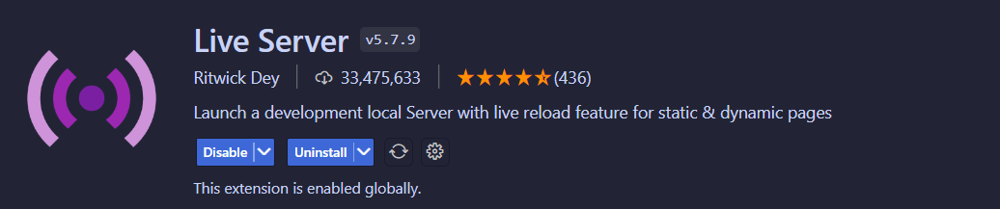
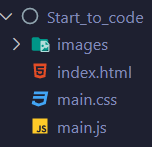

Stap 1: onze folderstructuur
Om een de uitvoering zo foutloos te laten verlopen maken we gebruik van een overzichtelijke folderstructuur.
Eerst starten we onze visual studio code op. Indien je geen visual studio code hebt kan je het hier installeren:
Stap 1.1: installeer de plug-in "open with live server"
 Download de volgende startcodeNa het downloaden van de startcode zou je deze files en folders moeten te zien krijgen (Geen zorgen, de extensies van de files wordt later duidelijk).
Stap 2: onze elementen (HTML)
We gaan van start in onze html file. In deze file schrijf je elementen die je later kan gebruiken en bewerken door middel van css en javascript.
Kopieer onderstaande code in de lege html file.
In deze code link we de html file met de css en javascript(deze schrijven we later). We maken ook een canvas element dat het bord zal vormen waar we flappy bird op spelen.
Proficiat je html file is af! Makkelijk toch! 😁 (voorlopig) 🤫Stap 3: Ons ontwerp (CSS)
In deze file maken we het ontwerp. In onze game is dit gelukkig ook vrij simpel. Kopieer onderstaande code in de main.css file.
In deze code centreren we onze tekst en geven we de tekst een bepaald font. We stellen ook onze achtergrond foto in. Deze halen we uit de images folder in die in het startbestand werd meegegeven
Stap 4: de functionaliteit (Javascript)
in onderstaande code definiëren we de afmetingen van ons spel. Namelijk het bord waarop gespeeld wordt. Eerst maken we onze variabelen aan die we later gebruiken in functies. De context maken we al aan maar is voorlopig leeg. Later komen we hierop terug.
we doen hetzelfde voor onze kleine Frederick. We zodat we hem te zien krijgen als hij aan het vliegen is.
nu definiëren we de pijpen we maken een lege array en stellen waarden in van de breedte en hoogte van de pijpen.
hierna maken we de physics van de game. We zorgen ervoor dat het scherm stilaan naar links verschuift. We zorgen ook voor zwaartekracht zodat onze Frederick terug naar beneden valt.
proficiat je hebt al je variabelen gedefineerd op naar de functies 😁Vanaf hier gaan we onze functies definiëren. Met volgende code laden gaan we onze game effectief laden. Eerst laden we het venster waar we op spelen, daarna onze kleine Frederick en de gevreesde obstakels.
met deze functie resetten we de game wanneer je de randen van het bord raakt. We voegen ook zwaartekracht toe iedere keer dat je naar beneden begint te vallen.
met deze functie berekenen we de score naarmate dat je vooruitgang maakt in een game. We zorgen er ook voor dat wanneer kleine Frederick de obstakels raakt, het spel wordt gereset.
in deze functie laten we de obstakels willekeurig inladen. We houden hierbij rekening dat er altijd een gelijk opening is zodat Frederick er toch door kan fladderen.
In deze functie zorgen we ervoor dat je Frederick kan besturen (in-game)
deze functie analyseert of Frederick een botsing heeft gemaakt 🤕
Aanschouw jouw eigen creatie. Zo makkelijk is het om een hit mobile game te maken. Nu kan je zoveel spelen met Frederick als dat je wil. Stuur zeker jouw highscores op naar frederick.roegiers@arteveldehs.be.
Heb je de smaak van het developen te pakken? Laat je creativiteit de vrije loop en wie weet maak jij de volgende hit game voor de mobiele markt.